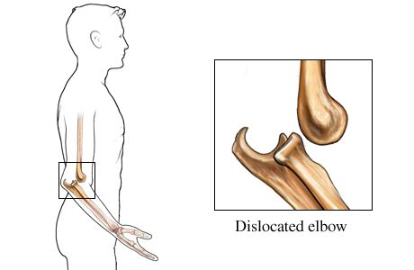

DO NOT move the victim, especially if there is a neck, hip, pelvis or upper leg injury.
DO NOT test a misshapen bone or joint for functionality or try to fix it.
DO NOT give the victim anything by mouth.
Does it look like the person is in shock? Are they breathing in short rapid breaths or do they look like they will pass out? You can try laying them down and raising their legs. Their feet should be about a foot above their head. Cover them in a blanket. Do not move the victim if their injury is head, back or leg based.
Find some ice or something cold. This will keep the swelling down and make it less painful. Do not apply the cold object directly but instead wrap it in cloth first.
Try to keep the person calm
Do not wash or breath on the wound.
Apply pressure and cover up the injury with either a bandage or clean cloth. Clothing can work as well. Try to sanitize or rinse it very gently.

When To Call 911
There is bleeding, swelling or a clear dislocation.
The joint should look deformed, indented or have a bulge around the socket.
The person may have difficulty moving and have a lot of pain.